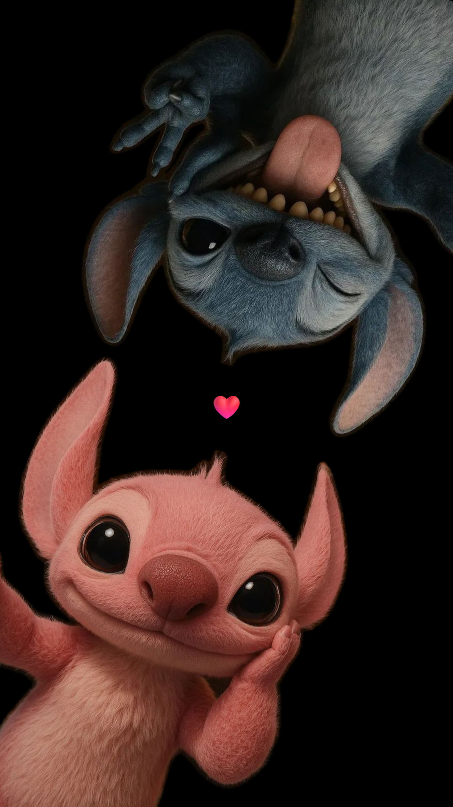

✦CAPÍTULO 02 · 01
O jeito de chegar
Tem gente que chega sem fazer esforço e, mesmo assim, deixa uma impressão diferente. Você tem um pouco disso.
1 / 5
A gente se conheceu há pouco tempo.
Então pensei em fazer algo diferente:
transformar algumas fotos suas em uma pequena viagem.
Talvez seja o sorriso. Talvez seja o jeito. Talvez seja aquela combinação de detalhes que não dá para explicar de primeira.

Tem gente que chega sem fazer esforço e, mesmo assim, deixa uma impressão diferente. Você tem um pouco disso.
Um sorriso, um olhar, uma foto, um jeito de ser. Às vezes é isso que faz alguém ficar na memória.
Eu poderia escrever mil coisas aqui. Mas algumas são melhores quando ficam simples.
Tem pessoas que são bonitas na foto.
E tem aquelas que conseguem deixar qualquer foto mais bonita simplesmente por estarem nela.
Você é uma dessas.
Então fica aqui essa pequena lembrança: algumas fotos, algumas palavras e um universo inteiro só para dizer uma coisa simples.
Você é linda, igual ao sol. ☀
uma pequena viagem, feita com carinho